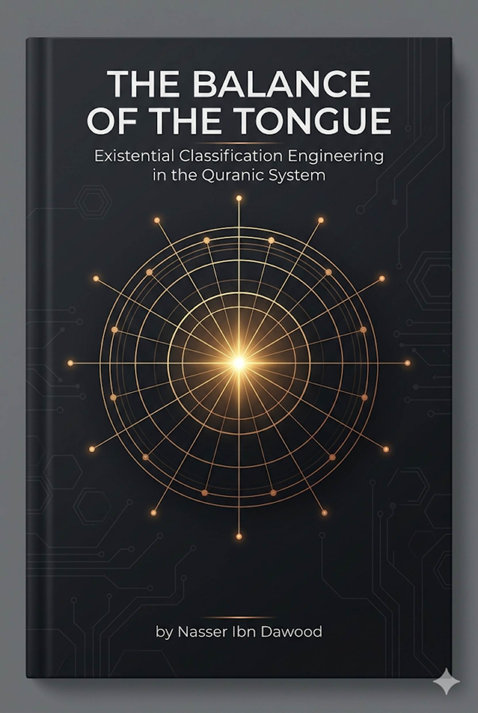
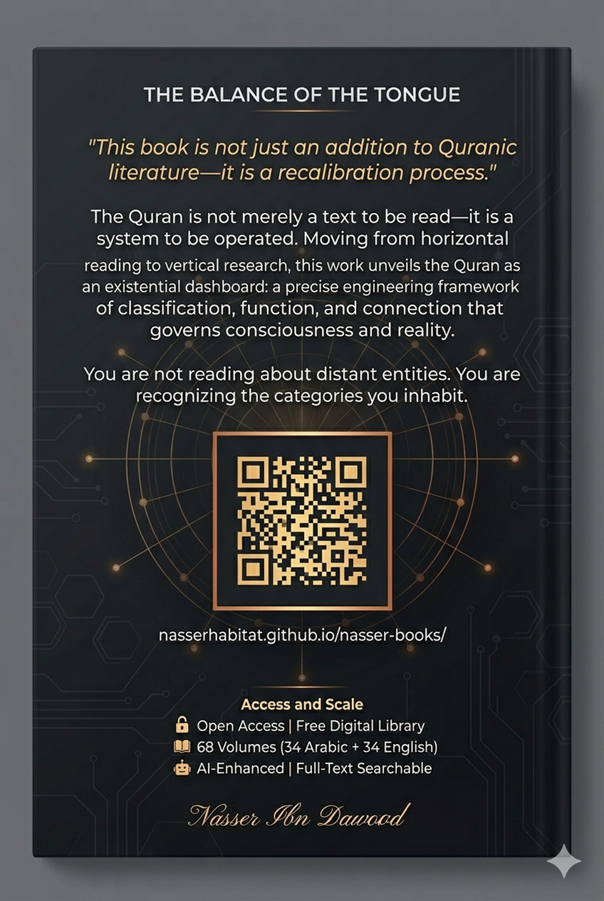

---
This book is not another addition to Quranic literature. It is a **"recalibration process"** of the guidance system through linguistic engineering and vertical research.
The major dilemma facing the Muslim mind was never the absence of the text—it was the **"absence of the balance"** . Doctrinal and institutional interpretations turned the cosmic laws and existential software of the Quran into mere historical rituals or rigid linguistic templates.
This work moves from **"surface reading"** to **"structural depth."** We do not read words as linguistic vocabulary but as **"classificatory codes."**
---
Traditional reading asks: *What does the text say?*
This approach asks: *How does the text work?*
|
Traditional
Reading |
Operating
System (OS) Reading |
|
Words
have "Meanings" |
Words
have "Functions" |
|
Focus is on
lexical semantics and dictionary definitions (Static data). |
Focus is on
the Utility/Output; what
the word triggers or executes in the system (Dynamic trigger). |
|
Concepts
have "Definitions" |
Concepts
have "Roles within a Network" |
|
Concepts are
defined by their boundaries and what they exclude (Isolation). |
Concepts are Nodes; defined
by their connectivity and how they interface with other modules (Integration). |
|
Verses
are "Sentences" |
Verses
are "Operational Units" |
|
Verses are
treated as grammatical constructs or narrative sequences (Linguistic flow). |
Verses are Runtime
Commands or logic gates that dictate the
flow of energy, behavior, and existence (Executable protocols). |
The goal is not to provide ready-made answers but to enable the reader to:
- Observe patterns
- Track relationships
- Test hypotheses
---
**What is Vertical Research?**
Instead of reading the Quran sequentially from beginning to end (horizontal reading), vertical research locks onto a single word and tracks its path across the entire text.
**Frequency as "Specific Gravity"**
In engineering, specific gravity determines a material's load-bearing capacity. In the Quranic tongue, frequency determines a word's **"operational pressure"** :
- **High-frequency words** (Allah, said, those who): The **"load-bearing pillars"** of the system. Any flaw in understanding them collapses the entire interpretive structure.
- **Low-frequency words**: **"Specialized codes"** that operate in very specific conditions to calibrate precise situations.
**The Golden Rule:** *"The higher the statistical frequency of a word, the lower the probability of metaphorical interpretation, and the higher the certainty of its systemic function."*
---
## Layer One: The Sovereignty Layer (The Source)
**The Beautiful Names are not "attributes of praise"—they are "governing laws."**
|
|
Functional Category |
Divine Names |
Operational Role (Systemic Perspective) |
|
Infrastructure |
Al-Khaliq, Al-Bari', Al-Musawwir |
Conceptual Engineering: Strategic estimation, material execution, and final aesthetic formation of entities. |
|
Power & Sustenance |
Ar-Razzaq, Al-Wahhab, Al-Muqit |
Energy Distribution: Pumping vital resources and "bio-fuel" to ensure systemic continuity and prevent collapse. |
|
Control & Monitoring |
As-Sami', Al-Basir, Ar-Raqib, Al-Muhaymin |
Universal Sensing: Real-time data acquisition and comprehensive oversight of all internal and external variables. |
|
Maintenance & Recovery |
Al-Ghafur, At-Tawwab, Al-'Afuww, Al-Jabbar |
System Correction: Identifying functional gaps, repairing errors (deviations), and restoring the entity to its "factory settings." |
|
System Stability |
Al-Hafiz, Al-Qayyum, Al-Quddus |
Structural Integrity: Maintaining cohesion, preventing entropy (chaos), and ensuring the purity of the system's operation. |
|
Governance & Law |
Al-Hakam, Al-'Adl, Al-Malik |
Central Processing & Authority: Establishing the universal constants, laws, and final judicial resolutions that govern the system. |
**The Threefold Classification (Ins, Jinn, Bashar)**
These are not mythical creatures but **"levels of operation"** within a single existential system:
**The Linguistic Insight (Amr ↔ Imra'ah)**
|
Term |
Root |
Functional Definition |
|
Bashar |
B-Sh-R |
The Biological Hardware: The visible, physical state of the entity. It represents the "external interface" and the material shell subject to entropy and physical laws. |
|
Ins |
A-N-S |
The Social Interface: The state of connectivity and intimacy. It represents the transition from a "biological unit" to a "societal node" capable of interaction and companionship. |
|
Jinn |
J-N-N |
The Backend Processes: The latent, concealed state. It represents the "hidden scripts" and background energies that influence the visible behavior without being seen. |
|
Term |
Functional Essence |
Operational Definition |
|
Dhakar (Male) |
The Emitter |
The Active Vector: Designed to project, transmit energy, and
initiate influence outward within the system. |
|
Untha (Female) |
The Receiver/Container |
The Nurturing Matrix: Designed to absorb, contain, and process
input to manifest it into a new fruit or organized structure. |
|
Rajul (Man) |
Operational Integrity |
The Executive State: A non-biological functional rank defined by
"standing" (Qiyam)—the capacity to uphold
responsibility, maintain steadfastness, and execute command. |
|
Imra’ah (Woman) |
Reflective Pairing |
The Mirroring State: The entity that pairs with a source,
internalizes the command (Amr), and reflects it into a tangible, lived reality. |
The Quranic link between *amr* (command) and *imra'ah* (woman) reveals:
- **Amr** (أمر): The "broadcast" energy seeking a space to settle
- **Imra'ah** (مرأة): The "space" that absorbs that energy and transforms it into stable reality
This is why the Quran does not call a female "imra'ah" unless she is in a functional pairing relationship—she becomes the executor of "operating commands" within the system.
**Ad-Duha (The Morning Brightness) is not a time—it is a "phase of disclosure"**
|
Concept |
Traditional
View |
Engineering
View (OS Perspective) |
|
Ad-Duha |
Morning
time / Early daylight |
Full
Manifestation Phase: The
state where data/meaning emerges from latency into a high-resolution,
observable output. |
|
Al-Layl
(Night) |
Darkness
/ Nighttime |
The
Containment System: A
shielded "closed-loop" environment
designed to protect internal processes and facilitate structural incubation
away from external interference. |
|
Saja
(Covering) |
Idle
stillness / Nightly calm |
The
Charging & Stabilization State: A phase of internal equilibrium
and potential energy accumulation, ensuring system stability before the next
deployment cycle. |
**The Operational Trinity of Surah Ad-Duha:**
1. **Protection Protocol (Al-Yateem - The Orphan):** The disconnected entity. Command: *"Do not oppress"* —do not crush what is disconnected; allow it to stretch and rebuild.
2. **Flow Protocol (As-Sa'il - The Questioner):** The entity seeking connection. Command: *"Do not repel"* —keep communication channels open to ensure data flow.
3. **Update Protocol (Fa Haddith - Then Proclaim):** The final output. Command: **"Update"** —rebroadcast the blessing to ensure the system does not calcify or die in silence.
---
|
|
Word |
Approx.
Frequency |
Functional
Description (OS Perspective) |
|
Allah |
2,699 |
Central
Processing Unit (CPU) & Environment: The
absolute operator and the supreme container of all sub-processes and laws. |
|
Alladhina |
1,080 |
Logic
Connector / Bus: A dynamic link that clusters
entities based on their functional attributes or metadata. |
|
Qala |
529 |
Interaction
Engine: The protocol of communication; confirms the system
is interactive and operates on "request/response" logic. |
|
Kana |
512 |
State
Persistence: The stability program;
confirms that laws and attributes are continuous states, not temporary
glitches. |
|
Ard
(Earth) |
461 |
Execution
Interface / Lab: The physical hardware and
operational field where the "Succession" (Khilafa)
operations are tested. |
|
Kull
(Every) |
372 |
Global
Constant: Asserts the universality of engineering laws;
ensures there are no "exception errors" in the divine sunan. |
|
Yawm
(Day) |
349 |
Cycle
Measurement: The temporal unit used to track
transformations, outputs, and the final "system audit." |
|
Sama’
(Sky) |
310 |
Control
Source / Uplink: The higher layer of the system
architecture from which commands and vital energy (Wahy/Rain)
descend. |
|
Amanu |
258 |
Security
Protocol (Encryption): The internal code that
stabilizes the human processor and protects the system from cognitive
dissonance. |
|
Nas
(People) |
241 |
Target
Biological Mass: The fundamental end-user and the
collective entity targeted for systemic reform and guidance. |
---
The Quranic system measures entity efficiency based on three criteria:
**Definition:** Any entity (person, idea, project) cut off from its operational support or growth source.
**The Dysfunction:** A state of "informational amputation"—the entity finds itself isolated from the total system.
**Treatment (Iwa' - Providing Shelter):** Providing a "connection space" that reintegrates this isolated entity into the system's "server," ensuring continued data flow and protection.
**Definition:** A "break" in the entity's vertebrae—a gap in the backbone.
**The Dysfunction:** The entity suffers from "structural fracture"; its connecting vertebrae (cognitive or material) are disconnected, preventing it from standing or performing sovereign functions.
**Treatment (Ighna' - Enriching):** A "functional splinting" that fills the gaps (vertebrae) to restore the entity to "uprightness" and load-bearing capacity.
**Definition:** Possessing the structure but lacking activation energy.
**The Dysfunction:** The entity has "tools" but lacks "drive"—energy has been contained and suppressed until movement stopped.
**Treatment (Tahreek - Mobilization):** Revitalization to bring the entity out of "calcification" into beneficial "flow" within society.
**Comparison Table:**
|
|
Criterion |
Al-Faqeer (Structural Gap) |
Al-Miskin (Kinetic Stagnation) |
|
Root Meaning |
F-Q-R: A fracture or
missing link in the vertebrae (the system's backbone). |
S-K-N: A state of "Sukun" or total cessation of movement/flow. |
|
Nature of Dysfunction |
Structural Failure: A critical lack of
basic tools, resources, or "connecting nodes" required to function. |
Kinetic Failure: The tools exist,
but the "flow" is deactivated. The system is trapped in a static
state. |
|
Visual/Operational State |
"Broken"
Architecture: The entity is
physically or structurally unable to bear the load of life. |
"Dormant"
System: The engine is present, but the
ignition is off; there is no output despite having the hardware. |
|
Systemic Treatment |
Reconnection: Repairing the
"vertebrae" by providing the missing structural links and core
assets. |
Reactivation: Breaking the
"Sakan" (stagnation) to restore the
dynamic flow and kinetic energy. |
---
**Rule:** The most frequently repeated word in the Quran is the "sovereign element" in the system.
**Application:** Do not exhaust your energy on rare words before deconstructing the "software pillars" (Allah, Lord, All-Knowing, those who, believed). Repetition is a "warning siren" telling you: *here lies the system's engine.*
**Rule:** Do not ask "What does this word mean?" Ask "What is its function and position in the system's network?"
**Application:** Meaning changes with historical context, but "linguistic function" is constant. Words in the "Tongue Engineering" are software codes performing specific tasks in building existential classification.
**Rule:** "Letters" (min, fi, ila, alladhina) are the "data vectors" in the Quran.
**Application:** Neglecting the study of connectors turns the text into scattered particles. The engineering researcher understands that "network logic" hides in these letters that determine flow directions between entities.
**Rule:** The Quran is a "dashboard," not a book of historical stories.
**Application:** If you face a "breakdown" in your reality or consciousness, search for the "class" you have assumed. Have you activated the "spider" algorithm, weakening your structure? Or risen to the "bee" station, making your giving beneficial?
**Rule:** This book is the "key"; the library is the "laboratory."
**Application:** Whenever a concept resists you, return to its dedicated volume in the digital library, where we have performed "vertical dissection" of every atomic letter, moving from "speculation" to "software certainty."
---
## I. Knowledge as a Universal Right
Knowledge is a universal right. The author firmly believes that wisdom should not be locked behind paywalls or language barriers.
- **Global Access Policy:** All books in this library are available for free in multiple digital formats (PDF, HTML, DOCX, TXT).
- **The Digital Library:** As of early 2026, the collection hosts 68 volumes (34 in Arabic and 34 in English), fully optimized for AI-assisted research and digital archiving.
- **Official Platforms:**
- Main Website: nasserhabitat.github.io/nasser-books/
- GitHub: nasserhabitat/nasser-books
This English edition is a condensed conceptual adaptation. It is not a word-for-word translation, but rather an **"extraction of essence."** It presents the core philosophical framework in accessible English, omitting the exhaustive linguistic debates and classical references found in the original Arabic text.
**For the academic researcher:** The original Arabic version remains the primary source for comprehensive linguistic analysis, detailed exegesis (Tafsir), and the complete bibliography.
---
1. **The Rule of Frequency:** Every word in the Quran has its own frequency; repetition determines the amplitude of its wave in existence.
2. **The Rule of Reflection (Imra'ah):** The human being (whether male or female) is the mirror reflecting the divine "command." The stability of your "system" depends on your discipline with "commands."
3. **The Rule of Connection:** Classification is not a fixed destiny—it is a "connection state." You can always "update" your class by moving from one rank to a higher one through activating the "stations of the prophets."
---
> *"This book is not the end of research. It is the instruction manual that opens the doors of the 68 volumes in my library, enabling the reader to engineer their life according to the balance set by the Creator of the heavens and the earth."*
**Naser Ibn Dawoud**
**Casablanca, Morocco**
**February 2026**